<!DOCTYPE html>
<html>

<head>
<title>Sistema Solar</title>
<meta charset = 'utf-8'>

</head>
<link rel= 'stylesheet' type='text/css' href='../css/estilos.css'>
</html>


<h1><body style = 'text-align:center;'><script>

/*
RAINBOW TEXT Script by Matt Hedgecoe (c) 2002
Featured on JavaScript Kit
For this script, visit http://www.javascriptkit.com
*/

// ********** cambia aquí

var text="Los planetas" // tu texto
var speed=80 // velocidad de movimiento 


if (document.all||document.getElementById){
document.write('<span id="highlight">' + text + '</span>')
var storetext=document.getElementById? document.getElementById("highlight") : document.all.highlight
}
else
document.write(text)
var hex=new Array("00","14","28","3C","50","64","78","8C","A0","B4","C8","DC","F0")
var r=1
var g=1
var b=1
var seq=1
function changetext(){
rainbow="#"+hex[r]+hex[g]+hex[b]
storetext.style.color=rainbow
}
function change(){
if (seq==6){
b--
if (b==0)
seq=1
}
if (seq==5){
r++
if (r==12)
seq=6
}
if (seq==4){
g--
if (g==0)
seq=5
}
if (seq==3){
b++
if (b==12)
seq=4
}
if (seq==2){
r--
if (r==0)
seq=3
}
if (seq==1){
g++
if (g==12)
seq=2
}
changetext()
}
function starteffect(){
if (document.all||document.getElementById)
flash=setInterval("change()",speed)
}
starteffect()
</script></body></h1>
<body>

<a href="javascript:if 
(document.all){document.body.style.behavior='url(#default#homepage)'; 
document.body.setHomePage('http://norfipc.com');};">
Hazme tu página de inicio</a>

<h4>Los planetas son cuerpos celestes que, a diferencia de las estrellas, no brillan, pero al ser alumbrados por el Sol, se hacen visibles.</h4>

<h3>Mercurio</h3>
<div align="center">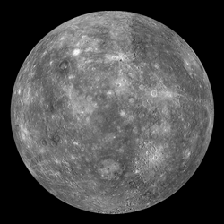</div>
<h5  align="left">vamos a empezar con el planeta más pequeño del sistema solar que es Mercutio, con solo un diámetro en su ecuador de 4.879 kilómetros, en comparación con los demás es muy pequeño. Además es el más cercano al Sol a una distancia de 57.910.000 kilómetros.</h5>
<h5 align="left" align="left" align="left">Su nombre viene de los romanos, lo llamaron como el “mensajero de los dioses”, ya que descubrieron que era el planeta que más rápido se movía de todos los del sistema solar.</h5>
<h5 align="left" align="left">LO que dura una rotación al Sol sería de solo 87,97 días. Pero la duración de una vuelta sobre su propio eje es de 58,6 días. Tampoco tiene satélites naturales.</h5>
<h5 align="left"> Se alcanzan de día temperaturas de hasta 425 ºC , y de noche temperaturas de hasta -170 ºC . Lo que hace que la media superficial sea de 179 ºC .</h5>
<h5 align="left">Como la Luna, Mercurio no contiene atmósfera, por lo que si estuvieras sobre su superficie verás el cielo de color negro. De la misma forma, verás el Sol del doble de tamaño que si estuvieras en la Tierra. Desde nuestro planeta, raramente se le ve a simple vista, excepto antes del alba o después del crepúsculo.</h5>

<h3>Venus</h3>
<div align="center">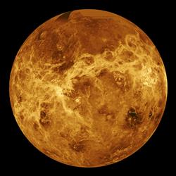</div>
<h5 align="left">Después del Sol y la Luna es el objeto más luminoso del cielo. Aparece iluminado por un color plateado, y se ve bien a simple vista por la mañana y por la tarde.</h5>
<h5 align="left">El diámetro de su ecuador es de 12.100 kilómetros, y se encuentra a una distancia del sol de 108.200.000 kilómetros </h5>
<h5 align="left">Es más pequeño que la Tierra, y de todos los planetas, es el que se acerca más a nosotros; llega a una distancia de solo 40 millones de kilómetros.</h5>
<h5 align="left"> El tiempo que tarda en girar sobre su eje es de 243 días. Además gira en sentido contrario al de la Tierra. Tarda en dar una vuelta al SOl 224 días.</h5>
<h5 align="left">Venus tiene una densa atmódfera, hasta tal punto que nadie ha conseguido ver la superficie de este planeta. No cuenta con ningún satélite natural y puede llegar a tener una temperatura de hasta 480 ºC</h5>

<h3>Tierra</h3>
<div align="center">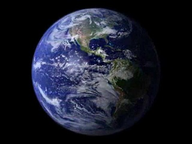</div>
<h5 align="left">Déspues de Venus iría la Tierra en orden desde el Sol hacia fuera. Se dice que se formó hace unos 4.600 millones de años y solo hace 1.000.000.000 de años que se formó la vida en ella.</h5>
<h5 align="left">La Tierra cuenta con agua, un elemento que resulta esencial para la vida. Además, dentro del Sistema Solar se encuentra dentro de lo que los científicos llaman la zona habitable. Es decir, que está ubicada a una distancia del sol donde la temperatura es perfecta para que se pueda vivir, ni mucho calor ni tampoco mucho frío.</h5>
<h5 align="left">La Tierra yiene un solo satélite natural, conocido com la Luna. Que influye sobre nuestro planeta, por ejemplo, provocando las mareas.</h5>
<h5 align="left">Gira describiendo una órbita elíptica alrededor del Sol, a una distancia de unos 150 millones de kilómetros. El giro sobre su propio eje es de un día.</h5>
<h5 align="left" align="left">Según los estudios actuales, se dice que la Tierra podrá tener vida durante unos 500 millones de años más. A partir de ese momento, la radiación procedente del Sol será demasiado elevada para contener la vida en la biosfera. Ya han habido varias extinciones masivas en el pasado; si la vida llega hasta este momento, la extinción será definitiva.</h5>

<h3>Marte</h3>
<div align="center">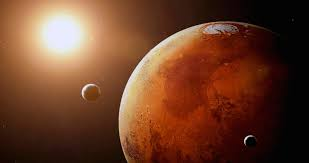</div>
<h5 align="left">Conocido también el planeta rojo por su color. Es el planeta en el cual se dan las condiciones ambientales más parecidas a las de la Tierra.</h5>
<h5 align="left">Esto es porque, aunque su temperatura en superficie por la noche es bajísima, durante día puede llegar hasta los 25 grados. </h5>
<h5 align="left">La atmósfera está muy rarificada, más o menos como la de la Tierra a 32.000 metros de altitud, y contiene sobre todo anhídrido carbónico y apenas oxígeno(Por esta razón no podría los mamíferos vivir de ninguna manera en Marte, y probablemente no se desarrollarían ni siquiera las más sencillas plantas).</h5>
<h5 align="left">Pero hubo un tiempo, en que se pensaba que en Marte habían mares, desiertos y hielos, como en la Tierra. Por otro lado, Marte tiene dos satélites(Fobos y Deimos). </h5>
<h5 align="left">Es el último de los 4 planteas interiores del Sistema Solar(junto a Mercurio, Venus y la Tierra). Después de Marte, está un cinturón de asteroides y los planetas exteriores, todos ellos son gaseosos.</h5>

<h3>Júpiter</h>
<div align="center">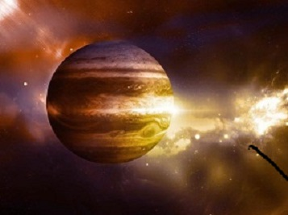</div>
<h5 align="left"> Es el planeta más grande del sistema solar y gira alrededor del Sol muy lentamente, tarda 12 años en dar una vuelta al Sol. Todavía no se sabe con precisión de qué está formado. Pero se sabecon certeza que es poco denso, y además un gran porcentaje es gaseoso.</h5>
<h5 align="left">Sin embargo no se sabe si el núcleo es sólido. Dada la gran distancia desde el Sol 778 millones de kilómetro), en Júpiter hace alrededor de 150 grados bajo cero.</h5>
<h5>Está recubierto de nubes, y entre esas nubes apareció, en 1878, una misteriosa y gigantesca mancha roja. Nadie ha sabido nunca explicar de qué se trata, excepto una hipótesis que dice que esa mancha es una gigantesca tormenta de arena. Júpiter posee un total de 67 satélites naturales de diversos tamaños.</h5>

<h3>Saturno</h3>
<div align="center">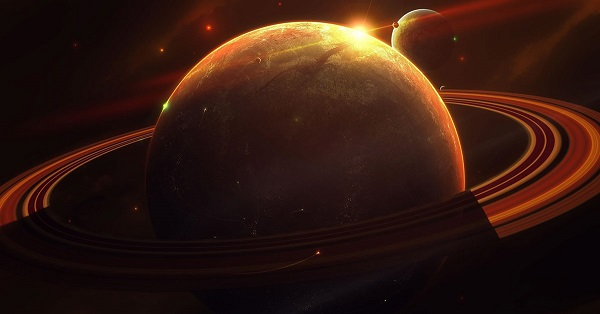</div>
<h5 align="left" align="left">La principal característica de Saturno son sus anillos que alparecer que se trata de fragmentos de un satélite desintegrado.</h5>
<h5 align="left">Es uno de los 4 planetas con anillos que existen en el sistema solar  (Júpiter, Saturno,  Urano y Neptuno). Y el sistema de anillos más grande de todos y el más visible.</h5> 
<h5 align="left">Se han descubierto por ahora 62 satélites naturales en su órbita. El mayor de todos estos se llama Titán, y está formado por rocas y hielo. Se cuenta que bajo la superficie puede existir agua en estado líquido.</h5>
<h5 align="left"> Considerado uno de los planteas gaseosos, este gigantesco planeta tiene probablemente, como Júpiter, un núcleo central sólido.</h5>
<h5 align="left">A causa de las bajas temperaruras el amoníaco presente está congelado. En la atmósfera se encuentra sobre todo dos gases : el hidrógeno y el metano.</h5>

<h3>Urano</h3>
<div align="center">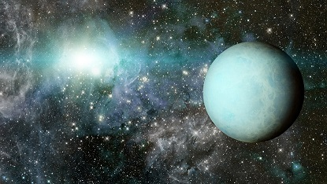</div>
<h5 align="left">Es el tercer planeta más grande del sistema solar, por ese motivo se puede observar a simple vista por la noche si las condiciones atmosféricas son propicias.</h5>
<h5 align="left">Debe su nombre a la Diosa griega Urano. Está tan lejano del Sol que tarda 84 años en girar a su alrededor.</h5>
<h5 align="left">Su superficie tiene una temperatura de 210 grados bajo cero. También Urano parece ser semigaseoso. Giran a su alrededor 27 satélites.</h5>
<h5 align="left">Fue descubierto en el año 1781 por el astrónomo William Herschl. Asimismo, Urano fue el primer planeta descubierto con un telescopio. Su atmósfera consta principalmente de hielo e hidrógeno.</h5>

<h3>Neptuno</h3>
<div align="center">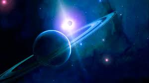</div>
<h5 align="left">Neptuno tarda casi 165 años en  una órbita completa. Su masa es 17 veces la masa de la Tierra</h5>
<h5 align="left">Tiene una temperatura en la superficie de 230 grados bajo cero. Forma parte de los llamados planetas exteriores.</h5>
<h5 align="left">Muy parecido a Urano, Neptuno fue descubierto en 1846. Tiene orbitando a su alrededor 14 satélites naturales.</h5>

<h3>plutón</h3>
<div align="center">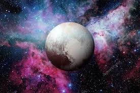</div>
<h5 align="left">En el año 2006, Dejó de ser considerado uno de los planetas del sistema solar por la Unión Astronómica Internacional .</h5>
<h5 align="left">Hasta esa fecha, Plutón era considerado el planeta más alejado del Sol.</h5>
<h5 align="left">Emplea 248 años para girar a su alrededor y por cuanto se sabe de él es una esfera rocosa cubierta de gases congelados.</h5>


<ul>
<li><a href='../index.html'>Inicio</a></li>
</ul>
<ul>
<li><a href='historia.html'>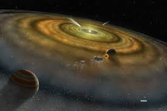Historia</a></li>
</ul>
<ul>
<li><a href='astrologia.html'>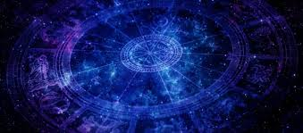Astrología</a></li>
</ul>
<ul>
<li><a href='curiosidades.html'>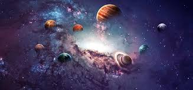Curiosidades</a></li>
</ul>
<ul>
<li><a href='unpocodehumor.html'>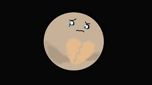Un poco de Humor</a></li>
</ul>
<body>


